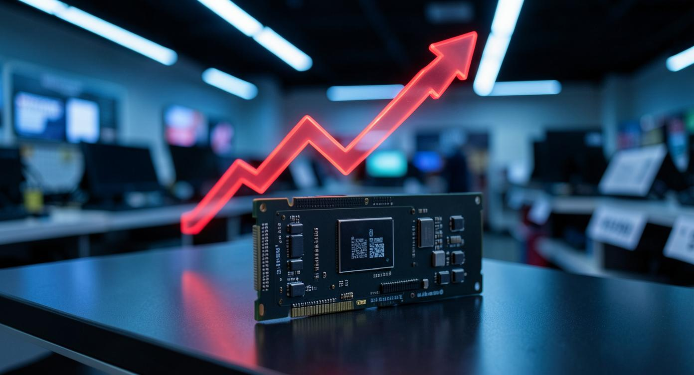
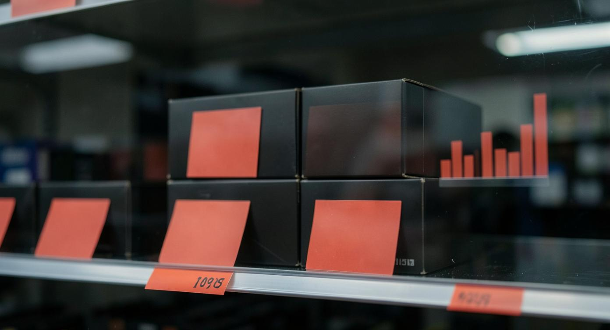
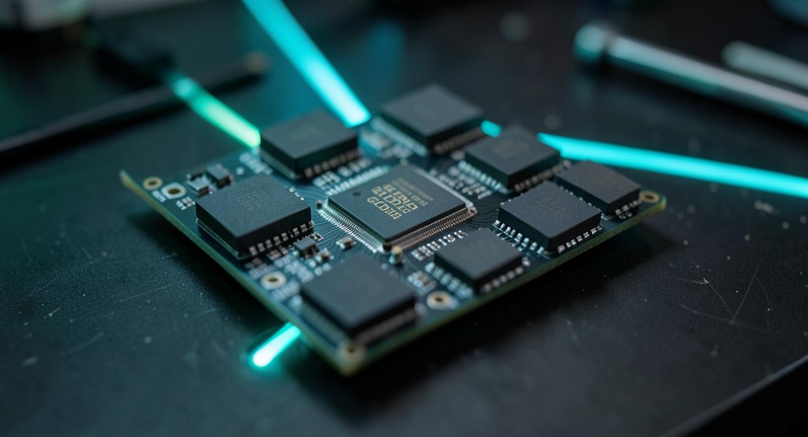

GPU Price Hike 2026: Graphics Card 35% Mehnga, India Me Kya Karein?

अगर आप इस साल ग्राफिक्स कार्ड खरीदने की सोच रहे हैं, तो एक बुरी खबर है। अक्टूबर 2026 तक के तीन महीनों में दुनिया भर में GPU की कीमतें लगभग 35% बढ़ चुकी हैं। यह कोई एक दुकान का बहाना नहीं, बल्कि 10 देशों के सर्वे के आधार पर निकला आंकड़ा है। भारत में भी असर दिखने लगा है — कुछ मॉडल पहले से महंगे हो चुके हैं और नए स्टॉक की कीमतें हर हफ्ते बदल रही हैं।
इस आर्टिकल में मैं आसान भाषा में बताऊँगा कि यह महंगाई कहाँ से आई, कौन से कार्ड सबसे ज़्यादा प्रभावित हुए, भारत में कीमत कैसे तय होती है और अलग-अलग बजट में आपको क्या करना चाहिए। साथ में एक चेकलिस्ट भी है, जिससे आप "छूट" के नाम पर महंगा सामान खरीदने से बच सकते हैं।
छोटा जवाब: अगस्त से अक्टूबर 2026 के बीच GPU कीमतें करीब 35% बढ़ीं। वजह सिर्फ गेमर्स की डिमांड नहीं, बल्कि AI डेटा सेंटर्स की मेमोरी भूख है — GDDR7 और DDR5 की सप्लाई तंग है। अगर आपका पुराना कार्ड काम चला रहा है, तो अभी जल्दबाजी में मत खरीदिए। अगर कार्ड बिल्कुल मर चुका है, तो बजट के हिसाब से इस्तेमाल किया हुआ कार्ड या निचला मॉडल देखें और दाम तीन दुकानों पर तुलना करें।
35% महंगाई का हिसाब कैसे बना?
TechSpot और TechPowerUp की रिपोर्ट के मुताबिक 10 देशों के रिटेल डेटा पर नज़र रखी गई। नतीजे ये आए — अगस्त 2026 में औसत कीमत 15% बढ़ी, सितंबर में 7%, और अक्टूबर में 11%। तीन महीनों को जोड़ें तो करीब 35% की बढ़ोतरी बैठती है। यह आंकड़ा अलग-अलग देशों का औसत है, इसलिए हर मॉडल पर इतना ही फर्क पड़ा होगा — ऐसा नहीं है।
| महीना | औसत बदलाव | मतलब |
|---|---|---|
| अगस्त 2026 | +15% | सबसे तेज़ उछाल |
| सितंबर 2026 | +7% | थोड़ी राहत, पर बढ़त जारी |
| अक्टूबर 2026 | +11% | फिर तेज़ी |
| तीन महीने का कुल | लगभग +35% | दाम लगभग एक-तिहाई ऊपर |
इसका सीधा मतलब यह है कि जो कार्ड अगस्त में ₹60,000 का था, वही अक्टूबर तक ₹80,000 के आसपास पहुँच सकता है। यह गणित हर कार्ड पर एक जैसा लागू नहीं होता, लेकिन दिशा साफ है — नीचे से ऊपर।

कौन से कार्ड सबसे ज़्यादा महंगे हुए?
हाई-एंड कार्ड्स में असर सबसे ज़्यादा दिखा। रिपोर्ट के मुताबिक RTX 5090 का सामान्यीकृत ग्लोबल दाम लगभग $7,240 तक पहुँच गया, जबकि RTX 5080 अमेरिका में करीब $2,200 पर बिक रहा है। ये नंबर भारतीय रिटेल कीमत नहीं हैं, बल्कि अंतरराष्ट्रीय बाजार के अवलोकन हैं। फिर भी इनसे अंदाजा लगता है कि हाई-एंड सेगमेंट में कितनी गर्मी है।
AMD की तरफ RX 9060 XT 16GB अक्टूबर में करीब 17% महंगा हुआ और RX 9070 XT में करीब 12% की बढ़ोतरी देखी गई। दिलचस्प बात यह है कि जो कार्ड "value for money" माने जाते थे, वही सबसे तेज़ी से महंगे हो रहे हैं। जब लोग हाई-एंड छोड़कर मिड-रेंज की तरफ जाते हैं, तो वहाँ डिमांड बढ़ जाती है और कीमत भी।

कीमतें क्यों बढ़ रही हैं? चार असली वजहें
1. AI डेटा सेंटर्स की मेमोरी भूख
AI सर्वर में जितनी मेमोरी लगती है, उतनी पहले किसी आम कंप्यूटर में नहीं लगती थी। एक बड़ा AI क्लस्टर हज़ारों GPU और उससे कई गुना मेमोरी खा जाता है। जब कंपनियाँ अरबों डॉलर का AI इंफ्रास्ट्रक्चर बना रही हैं, तो मेमोरी निर्माताओं के पास आम उपभोक्ता के लिए बची सप्लाई कम हो जाती है।
2. GDDR7 की सीमित सप्लाई
नई पीढ़ी के ग्राफिक्स कार्ड GDDR7 मेमोरी इस्तेमाल करते हैं। इसे बनाने वाली फैक्ट्रियाँ सीमित हैं और नई लाइन खड़ी करने में सालों लगते हैं। जब सप्लाई कम और डिमांड ज़्यादा हो, तो कीमत अपने आप ऊपर जाती है।
3. कंपोनेंट की बढ़ती लागत
सिर्फ मेमोरी नहीं, PCB, कूलिंग सिस्टम, पावर डिलीवरी और शिपिंग — सब महंगे हुए हैं। GPU निर्माता इन लागतों को पूरा खुद नहीं झेल सकते, इसलिए उनका एक हिस्सा रिटेल कीमत में जुड़ जाता है।
4. हाई-एंड कार्ड की कम उपलब्धता
कई बाजारों में टॉप-एंड कार्ड की सप्लाई सीमित है। जहाँ स्टॉक कम और खरीदार ज़्यादा, वहाँ दुकानें प्रीमियम वसूलती हैं। यही वजह है कि कुछ देशों में कार्ड की कीमत कंपनी के "सुझाए दाम" से काफी ऊपर मिलती है।
भारत में यह असर कैसे पहुँचता है?
भारत में GPU की फाइनल कीमत चार चीज़ों से बनती है — अंतरराष्ट्रीय दाम, डॉलर के मुकाबले रुपया, इम्पोर्ट ड्यूटी और डिस्ट्रीब्यूटर-रिटेलर का मार्जिन। जब विदेश में दाम 10% बढ़ता है, तो भारत में असर उससे थोड़ा ज़्यादा दिख सकता है, क्योंकि बीच की हर कड़ी अपना हिस्सा जोड़ती है।
एक और बात समझ लें — कंपनी के "ऑफिशियल प्राइस" और दुकान के "स्ट्रीट प्राइस" में फर्क होता है। ऑफिशियल कीमत कागज़ पर पुरानी रह सकती है, जबकि दुकान पर स्टॉक की कमी के कारण ज़्यादा वसूला जा रहा हो। इसलिए खरीदने से पहले कम से कम तीन जगहों पर कीमत देखें — ऑनलाइन स्टोर, लोकल दुकान और किसी दूसरे शहर का रिटेलर।
क्या सरकारी दाम बदला है?
नहीं। अभी तक किसी कंपनी ने भारत में आधिकारिक MRP बढ़ाने की घोषणा नहीं की है। जो बढ़ोतरी दिख रही है, वह ज़्यादातर स्ट्रीट प्राइस और स्टॉक की कमी की वजह से है। इसका मतलब यह भी है कि अगर सप्लाई सुधरती है, तो कीमतें कुछ हद तक नीचे भी आ सकती हैं।
₹15,000 से ₹30,000 के बजट में क्या करें?
इस बजट में नए हाई-एंड कार्ड मिलना मुश्किल है। अगर आपका काम 1080p गेमिंग, वीडियो प्लेबैक और हल्का एडिटिंग है, तो तीन रास्ते हैं:
- इस्तेमाल किया हुआ कार्ड: GTX 1650 Super या GTX 1660 Super जैसे कार्ड अभी भी 1080p में ठीक चलते हैं। खरीदने से पहले कार्ड की माइनिंग हिस्ट्री, फैन की आवाज़ और वारंटी ज़रूर चेक करें।
- निचला नया कार्ड: RX 6400 या Arc A380 जैसे एंट्री मॉडल, जो कम पावर में चलते हैं। इनमें VRAM कम होती है, इसलिए भारी टेक्सचर वाले गेम में दिक्कत आ सकती है।
- इंतज़ार: अगर पुराना कार्ड अभी चल रहा है, तो कुछ महीने रुकना सबसे समझदारी भरा कदम है।
₹50,000 से ऊपर के बजट में क्या करें?
इस रेंज में RX 9060 XT 16GB और RTX 5060 Ti जैसे कार्ड आते हैं। दोनों 1440p गेमिंग के लिए बने हैं, लेकिन दाम अब पहले से ज़्यादा हैं। खरीदने से पहले यह देखें कि आपके पसंदीदा गेम में कौन सा कार्ड ज़्यादा फ्रेम देता है और उसका ड्राइवर सपोर्ट कैसा है। सिर्फ नाम या ब्रांड देखकर फैसला न करें।
अगर आप 4K गेमिंग या AI वर्कलोड सोच रहे हैं, तो 16GB VRAM से नीचे मत जाइए। आज के गेम में टेक्सचर की भूख तेज़ी से बढ़ रही है और कम VRAM वाला कार्ड दो साल में ही सीमित लगने लगेगा।
खरीदने से पहले 8 पॉइंट चेकलिस्ट
- फाइनल प्राइस देखें: छूट का प्रतिशत नहीं, बल्कि जेब से जाने वाली रकम देखें।
- तीन जगह तुलना करें: एक ही मॉडल का दाम ऑनलाइन और ऑफलाइन में अलग हो सकता है।
- VRAM: 1080p के लिए 8GB, 1440p के लिए 12-16GB, 4K के लिए 16GB से ऊपर।
- PSU: कार्ड की पावर ज़रूरत और अपने स्मोकी (SMPS) के कनेक्टर मिलाएँ। 650W पर हाई-एंड कार्ड मत चलाइए।
- केस की जगह: कार्ड की लंबाई और मोटाई नाप लें, वरना बॉक्स खोलने के बाद पता चलेगा कि फिट नहीं हो रहा।
- वारंटी: कम से कम 2-3 साल की वारंटी और भारत में सर्विस सेंटर देखें।
- रेफर्बिश्ड/माइनिंग कार्ड: दाम कम मिलेगा, पर जोखिम ज़्यादा। सेलर की रेटिंग और रिटर्न पॉलिसी चेक करें।
- बिल: बिना बिल कार्ड मत लें, वरना वारंटी में दिक्कत आएगी।
इंतज़ार करें या अभी खरीदें?
| आपकी स्थिति | सलाह |
|---|---|
| पुराना कार्ड ठीक चल रहा है | इंतज़ार करें, कीमतें नरम होने का इंतजार करें |
| कार्ड खराब हो गया, काम रुका है | बजट कार्ड या इस्तेमाल किया हुआ कार्ड लें |
| नया PC बना रहे हैं, बजट तय है | GPU पर ज़्यादा खर्च करें, बाकी चीज़ों में संतुलन रखें |
| सिर्फ नई गेम के लिए जल्दी है | पहले गेम की असली ज़रूरत देखें, फिर कार्ड चुनें |
मेरी राय में कीमतें अभी चोटी पर हैं। अगर कोई डेडलाइन नहीं है, तो छह से आठ हफ्ते रुकने में कोई नुकसान नहीं। लेकिन अगर काम रुका हुआ है, तो "perfect दाम" का इंतज़ार करते-करते महीनों निकल जाते हैं — उससे बेहतर है कि अपने बजट में सबसे अच्छा उपलब्ध कार्ड ले लिया जाए।
मेरा नज़रिया
पिछले कुछ साल में मैंने देखा है कि GPU बाजार में "डिस्काउंट" का खेल बहुत चलता है। दुकान पहले कीमत बढ़ा देती है, फिर उस पर 10% की छूट का बड़ा स्टिकर लगा देती है। ग्राहक को लगता है कि बचत हो गई, जबकि असल में उसने पहले से ज़्यादा दिया। इसलिए मैं हमेशा कहता हूँ — प्राइस हिस्ट्री देखिए, छूट का प्रतिशत नहीं।
दूसरी बात, ज़रूरी नहीं कि हर किसी को नया कार्ड चाहिए। अगर आप 1080p में पुराने गेम खेलते हैं, तो तीन साल पुराना कार्ड भी ठीक काम देगा। पैसा उस चीज़ पर लगाइए जो असल में अनुभव बदले — अच्छा मॉनिटर, SSD, या 16GB RAM। GPU सिर्फ एक हिस्सा है, पूरा सिस्टम नहीं।
भारत में कहाँ से खरीदें और मोलभाव कैसे करें?
एक ही कार्ड के तीन अलग दाम आपको तीन जगह मिल सकते हैं — ऑनलाइन स्टोर, लोकल कंप्यूटर मार्केट और किसी दूसरे शहर का रिटेलर। कीमत के साथ-साथ सर्विस का फर्क भी पड़ता है, इसलिए सिर्फ सबसे सस्ता विकल्प मत चुनिए।
ऑनलाइन स्टोर
ऑनलाइन स्टोर में कीमत पारदर्शी दिखती है, बिल आसानी से मिलता है और रिटर्न पॉलिसी लिखी होती है। लेकिन स्टॉक अचानक खत्म हो जाता है और कभी-कभी सेलर तीसरे पक्ष का होता है। ऐसे में वारंटी क्लेम में परेशानी आ सकती है। खरीदने से पहले सेलर की रेटिंग, रिटर्न के दिन और ब्रांड का भारतीय सर्विस सेंटर ज़रूर देखें।
लोकल दुकान
लोकल दुकान का फायदा यह है कि आप कार्ड को हाथ में देख सकते हैं, मोलभाव कर सकते हैं और खराबी आने पर सीधे दुकानदार के पास जा सकते हैं। नुकसान यह है कि कीमत कभी-कभी ऑनलाइन से ज़्यादा होती है और स्टॉक सीमित रहता है। अगर आप नियमित ग्राहक हैं, तो दुकानदार अक्सर अच्छा दाम और तुरंत सर्विस देता है।
मोलभाव के तीन सरल तरीके
- ऑनलाइन दाम दिखाइए: दुकानदार को स्क्रीन पर कीमत दिखाएँ और पूछें कि वही दाम दे सकता है या नहीं।
- कैश का फायदा: कुछ दुकानें कैश पर थोड़ी छूट देती हैं, पर बिल ज़रूर माँगें।
- बंडल बनवाइए: GPU के साथ PSU या केस लेने पर अक्सर अच्छा डिस्काउंट मिल जाता है।
GPU के साथ और क्या बदलना पड़ सकता है?
बहुत लोग सिर्फ कार्ड का बजट बनाते हैं और बाद में पता चलता है कि PSU, केस या मॉनिटर भी बदलना पड़ेगा। इसलिए खरीदने से पहले पूरा हिसाब लगाएँ।
- PSU: नए कार्ड की पावर ज़रूरत देखें। 650W पर हाई-एंड कार्ड मत चलाइए।
- मॉनिटर: 1080p 60Hz मॉनिटर पर महंगा कार्ड पूरा फायदा नहीं देगा।
- CPU: पुराने प्रोसेसर के साथ बहुत तेज़ कार्ड लगाने पर प्रोसेसर पीछे छूट जाता है।
- केस और कूलिंग: लंबा कार्ड फिट हो या नहीं, और हवा निकलने की जगह है या नहीं — यह पहले देखें।
इन चार चीज़ों का हिसाब लगाकर ही कार्ड चुनें, वरना “सस्ता कार्ड” अंत में महंगा पड़ जाता है।
अक्सर पूछे जाने वाले सवाल
क्या GPU कीमतें फिर नीचे आएँगी?
अगर मेमोरी की सप्लाई सुधरती है और AI डेटा सेंटर की मांग थोड़ी शांत होती है, तो कीमतें नरम पड़ सकती हैं। लेकिन यह पक्का नहीं कहा जा सकता — यह पूरी तरह सप्लाई चेन पर निर्भर है।
क्या भारत में भी 35% महंगा हुआ है?
हर मॉडल पर एक जैसा असर नहीं है। कुछ कार्ड 10-15% महंगे हुए, कुछ में 30% से ज़्यादा। सटीक कीमत के लिए अपने शहर के रिटेलर से पूछें।
इस्तेमाल किया हुआ GPU खरीदना ठीक है?
हाँ, अगर सेलर भरोसेमंद हो और आप कार्ड को चलाकर देख सकें। माइनिंग वाले कार्ड में फैन और थर्मल पेस्ट खराब मिल सकते हैं, इसलिए कीमत कम होनी चाहिए।
RTX 5090 लेना चाहिए या इंतज़ार करना चाहिए?
अगर आपका काम 4K गेमिंग या AI है और बजट है, तो ले सकते हैं। लेकिन सिर्फ "टॉप मॉडल" के लिए इतना पैसा देना ज़रूरी नहीं — 1440p के लिए मिड-रेंज कार्ड भी काफी है।
क्या मेमोरी की कमी का असर SSD पर भी पड़ेगा?
हाँ, NAND फ्लैश की सप्लाई भी प्रभावित है, इसलिए SSD की कीमतें भी बढ़ सकती हैं। इसका असर अगले साल तक दिख सकता है।
निष्कर्ष
GPU महंगे हो रहे हैं और इसकी सबसे बड़ी वजह AI है, गेमिंग नहीं। भारत में असर धीरे-धीरे पहुँचता है, लेकिन पहुँचता ज़रूर है। इसलिए खरीदने से पहले तीन जगह दाम देखें, VRAM और PSU की जाँच करें, और छूट के स्टिकर से नहीं, असली कीमत से फैसला करें। अगर काम रुका नहीं है, तो इंतज़ार सबसे सस्ता उपाय है।
स्रोत: TechSpot, 2 नवंबर 2026 · TechPowerUp, 3 नवंबर 2026
दाम अंतरराष्ट्रीय रिपोर्टों और बाजार के अवलोकन पर आधारित हैं। खरीदने से पहले स्थानीय रिटेलर से ताज़ा कीमत पक्की करें।